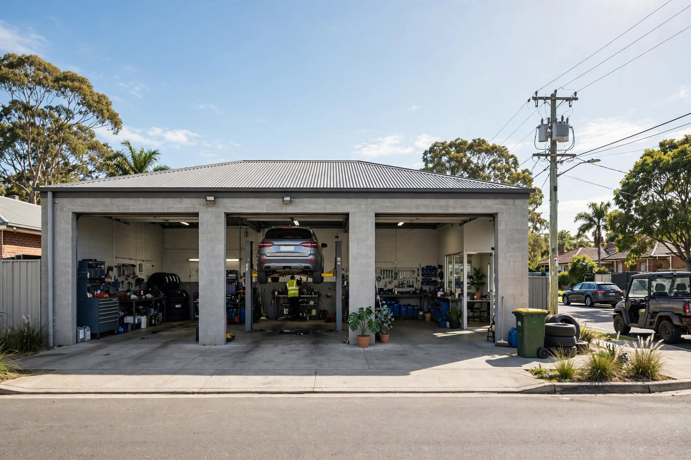
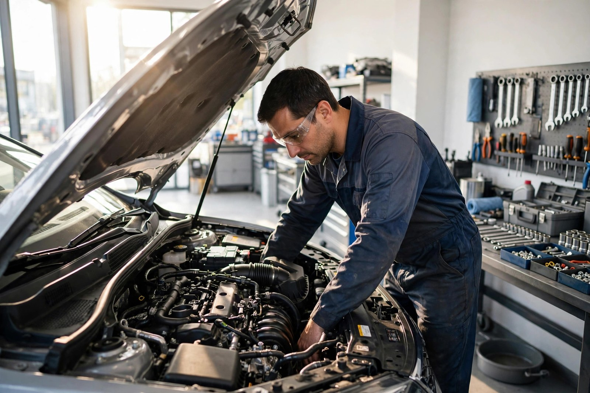
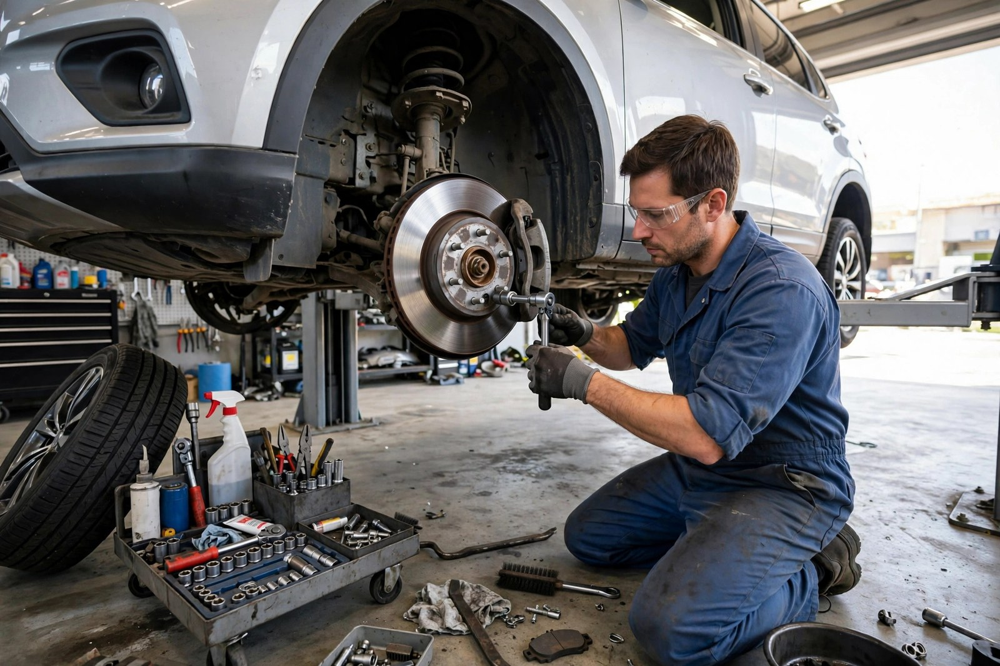
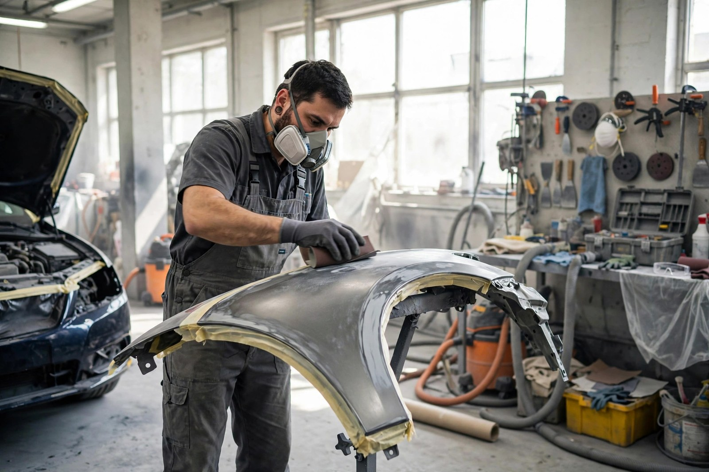

Car Servicing
Regular servicing done properly — oil changes, tyre rotations and brake inspections to keep you safe.

Herston, Brisbane · Auto repair & body shop
Herston Car Clinic in Herston — general repairs, servicing, engine diagnostics and body-shop work. Experienced mechanics, straight talk, rated 4.7 stars from 45 reviews.
Customer rated
Herston locals keep coming back — fast, friendly, honest work on their cars.
What we do
Regular servicing done properly — oil changes, tyre rotations and brake inspections to keep you safe.
Warning light on? Precise diagnostics with the latest technology to find the real problem.
Brake inspections, pads and rotors — because stopping matters more than going.
From rough shifts to full transmission repairs, handled by experienced mechanics.
Exhaust system repairs for noise, leaks and emissions — sorted quickly.
Dents, scratches and panel repairs — mechanical and body work in one place.

Why choose us
Herston Car Clinic is the kind of workshop where they know your name: well-trained mechanics, honest assessments, and cars looked after like their own. Keeping Brisbane drivers on the road is what they do best.
The shop


What drivers say
Good to know
It's best to call first on 0419 757 908 — most workshops run by appointment, and a quick call gets your car in sooner.
Essentials like oil changes, tyre rotations and brake inspections, plus checks to keep your car running smoothly and safely.
Yes. We use the latest diagnostic technology for a precise assessment of any problem, from check-engine lights to strange noises.
Yes — Herston Car Clinic is both a repair shop and a body shop, so dents, scratches and panel repairs are all handled here.
Come see us